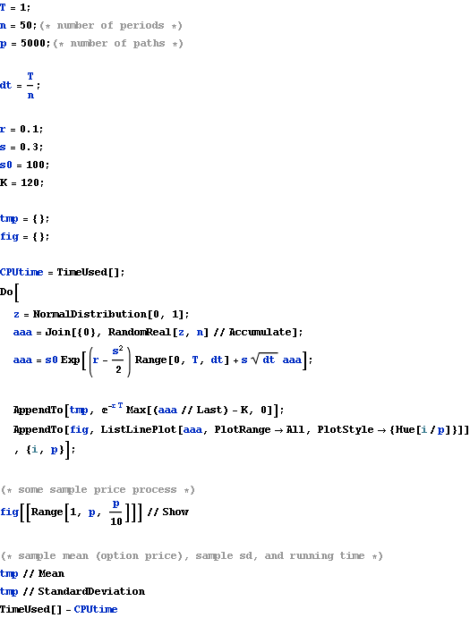
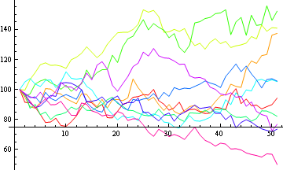
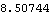
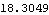
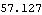

Monte Carlo Vanilla Option Pricing
Vanilla options are not path dependent, but here the sample path is generated to
1. plot the figure
2. make it easier to modify this code for path dependent option pricing




